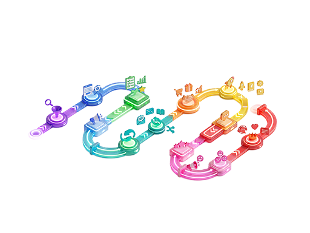
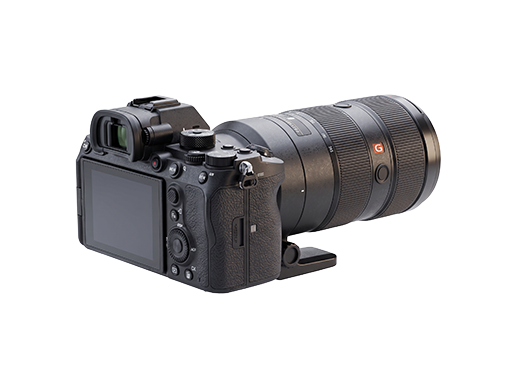
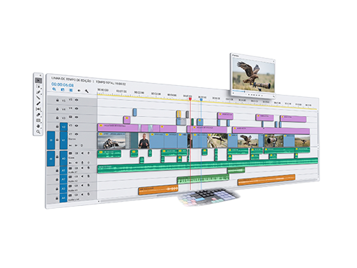
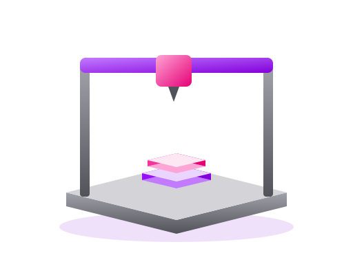

Olá, eu sou o Allisson!
Especialista em impulsionar negócios com estratégias consolidadas. Divido minha atuação entre a aceleração de pequenas e médias empresas e a aplicação de soluções em escala no grande varejo. Meu foco é antecipar desafios, otimizar processos e gerar resultados inovadores e sustentáveis.
Projetos
CRM
Liderança tática e experiência com Marketing Cloud Salesforce e Insider One.

Fotografia e Edição
Mais de 15 anos registrando eventos sociais, com criação nas principais ferramentas de edição do mercado.


Maker
Impressão 3D, protótipos e objetos criados do zero, camada por camada.

Vamos conversar?
Conte sua ideia e vamos desenvolver juntos soluções criativas e inovadoras para o seu negócio. Será um prazer ouvir seus objetivos e ajudar a alcançá-los.
Fale comigo pelo WhatsApp